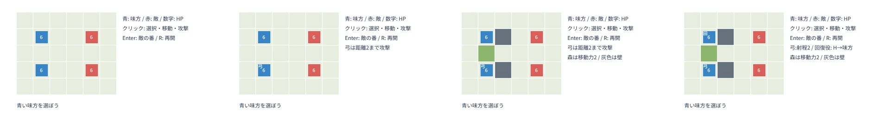
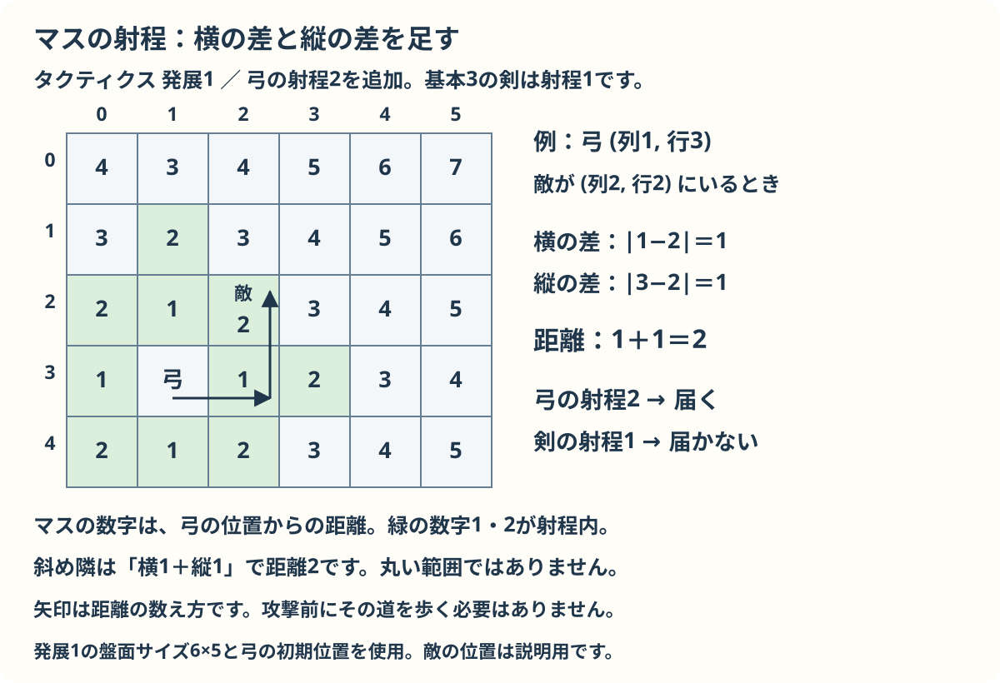
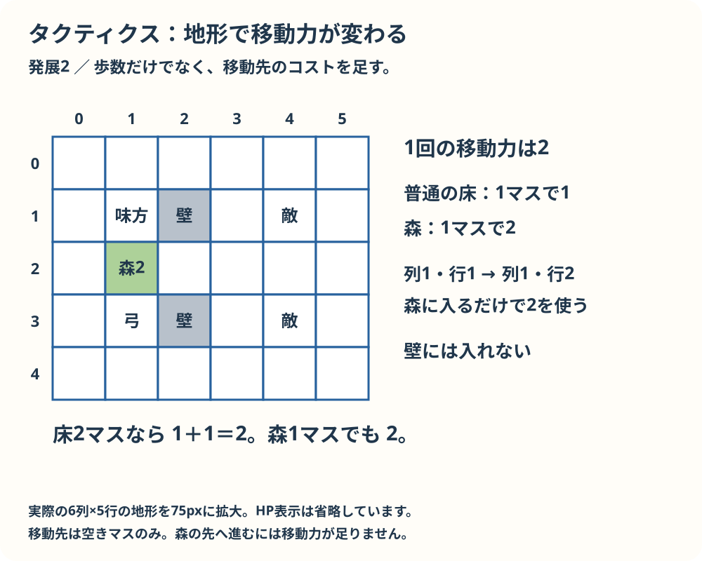

マス目の戦術ゲームの発展
始める前に
基本編の完成版から始めます。ZIPを展開してできたフォルダーでindex.htmlを開きます。ZIPには基本編の3ファイルが入っています。
WindowsでZIPを展開する（動画）
各段階の変更を上から順に加え、保存したら index.html を開くか再読み込みします。
ステップ 1：射程の違う仲間
このステップの見本を図で見る
|3-1|=2; 2 <= 1 は false
攻撃できない
|3-1|=2; 2 <= 2
攻撃できる。敵HP6→4
ゲーム画面とコードの前後を見る

このステップの見本
const range = 1;
変わったコードの一例（script.js）const range = unit.kind === "archer" ? 2 : 1;
見本で確かめること
弓を選ぶと、距離2の敵にも攻撃できます。
目標
仲間と地形の仕組みを追加します。
弓役を配置する
Game の constructor() で味方を作る次の行を置き換えます。
置き換える範囲
this.units = [new Unit(1, 1, "ally", "sword"), new Unit(1, 3, "ally", "sword"),置き換えるコード
this.units = [new Unit(1, 1, "ally", "sword"), new Unit(1, 3, "ally", "archer"),2体目の味方の種類を "archer" にします。基本編の描画が弓の文字を表示します。
弓の射程を2にする
Game.click() の射程を決める行を置き換えます。
置き換える範囲
const range = 1;置き換えるコード
const range = unit.kind === "archer" ? 2 : 1;弓なら射程2、その他は1です。距離は横と縦の差の絶対値を足すので、斜め隣は距離2になります。

横と縦に何マス離れているかを足して距離を求めます。図の |1−2| はコードの Math.abs(1 - 2) と同じで、引き算が-1でも距離は1マスと数えます。斜め隣は横1と縦1で距離2です。このステップで追加する弓は射程2、剣は射程1なので、図の位置には弓だけが届きます。矢印は距離の数え方を表し、移動経路ではありません。
弓の射程を表示する
draw() のEnterとRの説明の下に追加します。
目印
ctx.fillText("Enter: 敵の番 / R: 再開", 440, 145);追加するコード
ctx.fillText("弓は距離2まで攻撃", 440, 180);弓の攻撃範囲を表示します。
保存して再読み込みし、弓役が距離2の敵を攻撃できることを確かめます。
保存後の確認
保存してゲーム画面を更新する（動画）
index.html を再読み込みします。弓を選ぶと、距離2の敵にも攻撃できます。 この段階の見本を開く
小さな練習
表示の文章を変えて比べます。 練習後はコードを元に戻してください。
ステップ 2：地形と移動コスト
このステップの見本を図で見る
0 + 1 = 1 <= 2
移動できる
0 + 2 = 2 <= 2
移動できる
1 + 2 = 3 > 2
この道では届かない
ゲーム画面とコードの前後を見る
このステップの見本
const limit = 1;
変わったコードの一例（script.js）const limit = 2;
見本で確かめること
森へは移動力2が必要で、壁やほかのユニットは通り抜けられません。
目標
仲間と地形の仕組みを追加します。
壁を置く
Game.wall() を置き換えます。
置き換える範囲
wall(x, y) { return x < 0 || x >= width || y < 0 || y >= height; }置き換えるコード
wall(x, y) { return x < 0 || x >= width || y < 0 || y >= height || (x === 2 && (y === 1 || y === 3)); }盤外に加え、(2, 1) と (2, 3) を壁にします。
森の移動費用を決める
Game.cost() を置き換えます。
置き換える範囲
cost(x, y) { return 1; }置き換えるコード
cost(x, y) { return x === 1 && y === 2 ? 2 : 1; }(1, 2) は森で費用2、それ以外は1です。

1回の移動で使える移動力は2です。普通の床なら2マス進めますが、森は1マスに入るだけで2を使います。壁や他のユニットのいるマスは通れません。
実装の壁(2,1)(2,3)、森(1,2)を表示。列1・行1から森への移動を例示。75pxへ拡大しHPは省略。
移動力を2にする
Game.reachable() の次の行を置き換えます。
置き換える範囲
const limit = 1;置き換えるコード
const limit = 2;通るマスの費用の合計が2以内の経路を探します。敵は別の enemyStep() で移動し、森の費用を使いません。
森と壁の説明を表示する
draw() の弓の説明の下に追加します。
目印
ctx.fillText("弓は距離2まで攻撃", 440, 180);追加するコード
ctx.fillText("森は移動力2 / 灰色は壁", 440, 215);森と壁の見方を表示します。
保存して再読み込みし、壁を通れず、森への移動に2を使うことを確かめます。
保存後の確認
森へは移動力2が必要で、壁やほかのユニットは通り抜けられません。 この段階の見本を開く
小さな練習
表示の文章を変えて比べます。 練習後はコードを元に戻してください。
ステップ 3：回復役を加える
このステップの見本を図で見る
min(6,3+2)=5
HPが2回復。行動済みになる
min(6,5+2)=6
最大HP6で止まる
ゲーム画面とコードの前後を見る
このステップの見本
この行を足す前 変わったコードの一例（script.js）
target.hp = Math.min(target.maxHp, target.hp + 2); unit.acted = true; this.healing = false; this.message = "味方を2回復"; return;
見本で確かめること
回復役を選んでHを押し、隣の味方をクリックするとHPが2回復します。
目標
仲間と地形の仕組みを追加します。
回復役を配置する
Game の constructor() で味方を作る行を置き換えます。
置き換える範囲
this.units = [new Unit(1, 1, "ally", "sword"), new Unit(1, 3, "ally", "archer"),置き換えるコード
this.units = [new Unit(1, 1, "ally", "healer"), new Unit(1, 3, "ally", "archer"),1体目を回復役にします。
回復の選択中かを記録する
Game の constructor() で次の行を置き換えます。
置き換える範囲
this.selected = null; this.state = "playing"; this.message = "青い味方を選ぼう";置き換えるコード
this.selected = null; this.state = "playing"; this.message = "青い味方を選ぼう"; this.healing = false;healing は回復する味方を選んでいるかを表し、最初は偽です。
次の番に回復の選択を戻す
Game.endTurn() の選択解除を置き換えます。
置き換える範囲
this.selected = null;
this.message = "味方の番";置き換えるコード
this.selected = null; this.healing = false;
this.message = "味方の番";次の番ではユニットと回復の選択を解除します。
隣の味方を回復する
Game.click() で味方を選ぶ次の行を置き換えます。
置き換える範囲
if (target && target.side === "ally") { this.selected = target; this.message = "味方を選択"; return; }置き換えるコード
if (this.healing && unit && unit.hp > 0 && !unit.acted && target && target.side === "ally" && target !== unit && Math.abs(unit.x - x) + Math.abs(unit.y - y) === 1) {
target.hp = Math.min(target.maxHp, target.hp + 2); unit.acted = true; this.healing = false; this.message = "味方を2回復"; return;
}
if (target && target.side === "ally") { this.selected = target; this.healing = false; this.message = "味方を選択"; return; }回復選択中で、未行動の回復役から距離1の別の味方を選ぶとHPを2回復します。Math.min で最大HPを超えず、行動済みにします。通常の味方選択では回復選択を解除します。
回復の操作を表示する
draw() の弓の説明を置き換えます。
置き換える範囲
ctx.fillText("弓は距離2まで攻撃", 440, 180);置き換えるコード
ctx.fillText("弓:射程2 / 回復役: H→味方", 440, 180);回復役を選びHを押してから味方を選ぶ操作を表示します。
Hキーで回復先を選ぶ
keydown のEnterを調べる行の下に追加します。
目印
if (key === "enter") game.endTurn();追加するコード
if (key === "h" && game.state === "playing" && game.selected && game.selected.kind === "healer" && !game.selected.acted) { game.healing = true; game.message = "隣の味方を選ぶ"; }プレイ中に未行動の回復役を選んでHを押すと、次に隣の味方を選ぶ状態になります。
保存して再読み込みし、回復役を選んでHを押し、隣の味方を選ぶとHPが最大値を超えずに2回復することを確かめます。
保存後の確認
回復役を選んでHを押し、隣の味方をクリックするとHPが2回復します。 この段階の見本を開く
小さな練習
表示の文章を変えて比べます。 練習後はコードを元に戻してください。